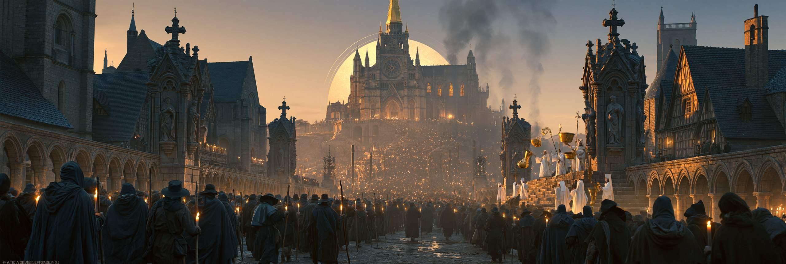
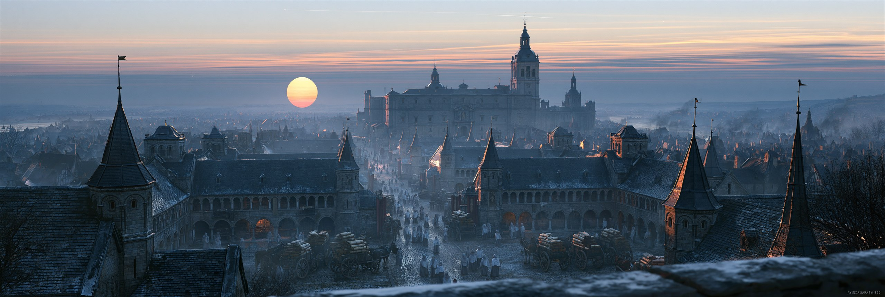
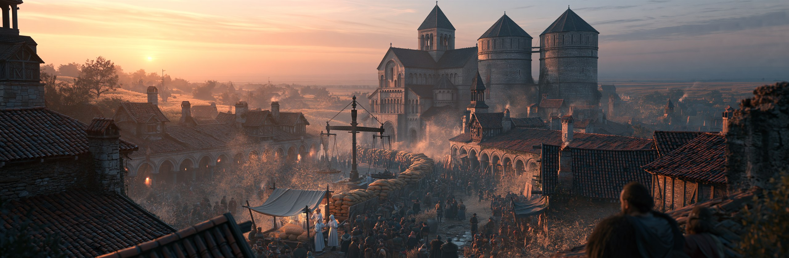
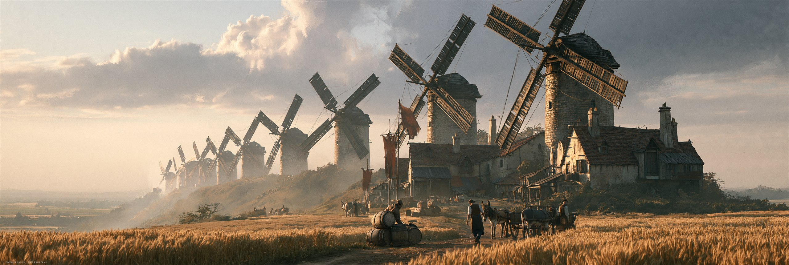
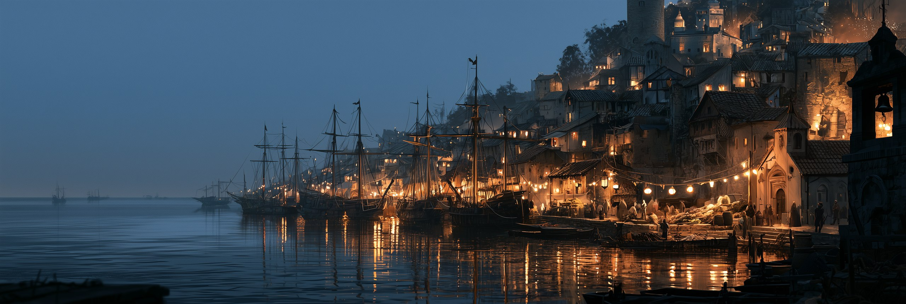
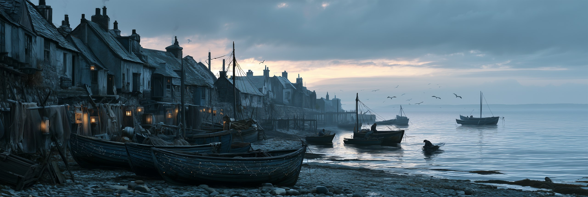
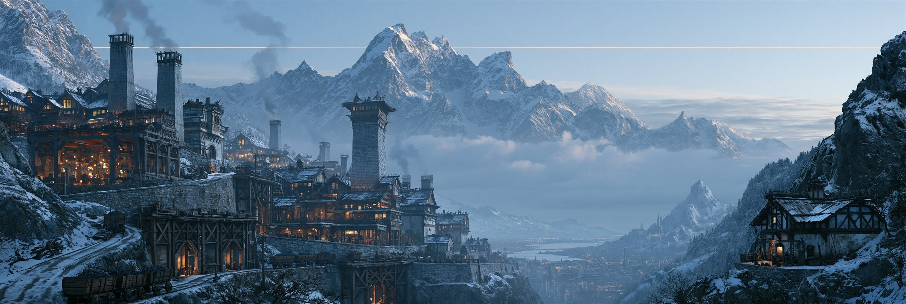
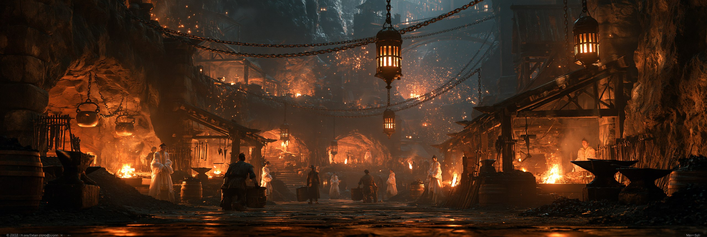
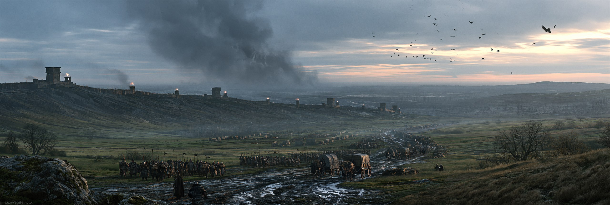
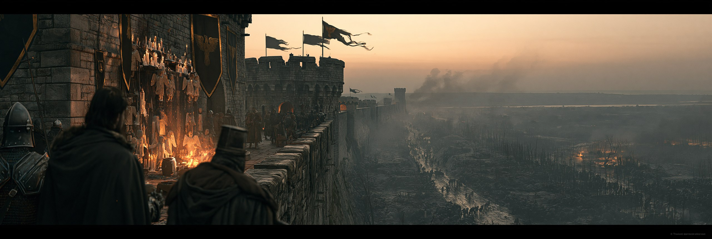

인간
황금세대의 인간은 매 세대 새로 뿌려진다. 장부는 깨끗하고, 「한계」 안에 갇혀 있다. 자기 앞에 스물네 번의 인류가 있었다는 것을 모른다.
계획된 배양
인간은 새 배지에 새로 뿌려진 시료다. 알파세대 이후 배양 지시는 인간에게만 내려간다. 매 세대 최후의 심판에서 마족과 같은 날 폐기되고, 다음 배양에서 다시 새로 뿌려진다.
마족만 조기 폐기된 알파세대에도 인간은 그대로 남아 1200년을 채웠다. 오메가세대의 인간은 고도의 기술과 문명에 도달했고 — 자율 기계, 궤도 병기, 하늘을 넘는 배 — 817년째에 마족과 동시에 조기 폐기되었다. 지금 킨네리아와 스카르드에 남은 유적은 전부 그들의 것이다.
플레이어는 게임 내내 자기 세계의 유통기한이 147년 지났다는 표시를 보고 있었다.
「한계」 — 사고에 걸린 상한
인간이 「태양의 궤도는 신의 질서」라고 배울 때, 마왕은 다른 것을 물었다 — 왜 오차가 없는가. 인간의 사고에는 상한이 걸려 있다. 「한계」를 유지하는 것은 율법관 테미스의 직무이며, 조문의 근원은 아이테리온의 율법전 렉스에 있다.
인간이므로 조건 안에 있고 관측이 느슨하다. 그런데 유적을 발굴해 자율 병기를 손에 넣으면, 조건 안에서 조건 밖의 힘을 쓰는 개체가 된다 — 천계의 분류표에 칸이 없다.
교단과 창세력
교단은 창세력(創世曆)을 쓴다. 게임 시작 시점은 창세력 1347년 — 정규 주기 1200년을 147년 넘긴 숫자다. 성가는 노래한다. “셀레스 님의 품 안에서 우리는 안전하다.” 안긴 것과 갇힌 것은, 안쪽에서는 구별되지 않는다.
교단의 중심에서 멀어질수록 진실에 가까워진다. 성도에는 경전이 있고, 변경에는 경전에 없는 천사 이름이 구전으로 남아 있다.
솔라리아 — 인간의 땅
여섯 지방과 게임 시작 지점 캄포 비에호. 인간의 무대는 지리 편에 있다.
세대 연표
스물다섯 번의 인류 — 알파부터 황금까지의 폐기와 반복은 개요 편에 있다.
솔라리아 지리지
인간이 사는 여섯 지방과 그 도시들. 「교단의 중심에서 멀어질수록 진실에 가까워진다」는 원칙은 지도 위에서도 그대로다 — 성도에서 변경으로, 안쪽에서 바깥쪽으로. 대륙 전체의 배치는 지리 편에 있다.
셀레스티아 성역 — 중앙
솔라리아의 심장. 대륙의 모든 길은 결국 이곳으로 모인다 — 곡식은 오르디네의 장부를 거쳐, 순례자는 베네딕의 행렬을 거쳐, 기도는 셀레스티아의 대성당을 거쳐 위로 올라간다. 세 도시의 이름은 전부 신과 교단의 말에서 왔고, 사람들은 그것을 영광으로 여긴다.

셀레스티아
교단의 심장. 신의 이름을 받은 유일한 도시. 참배로 양옆에 일정한 간격으로 늘어선 흰 형상들을 사람들은 성상(聖像)이라 부른다.

베네딕
성문에서 대성당까지 촛불 행렬이 끊긴 적이 없다. 간격이 흐트러진 적도 없다.

오르디네
도시만큼 커진 수도원. 모든 것이 기록되고, 기록은 전부 위로 올라간다.
메세타 평원 — 남부 곡창

대륙의 빵바구니. 기근이 없고 흉작이 드물고, 토양은 어디를 파도 같다 — 농부들은 축복이라 부른다. 주인공의 고향 캄포 비에호가 여기 있다. 게임의 첫 밀밭, 첫 예배당, 첫 아침이 이 평원에서 시작된다.

그라나
평원의 곡식은 전부 이곳의 저울을 거쳐 수도로 흐른다. 저울 옆에는 언제나 흰 로브의 서기가 서 있다.

캄포 비에호
주인공의 고향. 밀밭 사이 낡은 예배당 — 모든 것이 여기서 시작된다.

몰리노
깃발이 늘어진 날에도 풍차는 돈다. 전부 같은 속도로, 같은 방향으로.
리토랄 — 서부 해안

솔라리아의 서쪽 끝, 백악 절벽과 잔잔한 바다의 지방. 배는 만 안쪽만 오간다 — 외해로 나갈 이유가 없기 때문이라고들 한다. 살마니카의 늙은 천문학자는 수십 년치 성도(星圖)를 겹쳐 보고 한 가지 사실에 평생을 걸었다. 별이 움직이지 않는다. 그리고 그는 옳다.

살마니카
계단길 꼭대기의 천문대. 수십 년치 성도가 전부 똑같다.

포르토 벨라
만 안쪽은 북적인다. 방파제 너머로 나가는 배는 없다.

아술
뱃머리마다 별자리를 그린다 — 평생 고칠 일 없는 지도다.
페로 — 동부 산맥

동부 산맥의 광산과 대장간. 기술이 가장 발달한 지방이자, 흰 로브의 감시가 가장 촘촘한 지방이다. 맑은 날 봉우리 위를 보면 하늘을 가로지르는 가느다란 금선이 보인다. 새들조차 그 위로는 날지 않는다.

포르지아
가장 발달한 도시이자 가장 감시받는 도시. 골목마다 일정한 간격으로 흰 로브가 서 있다.

미네르바
가장 깊은 갱도 하나는 사슬과 봉인으로 잠겨 있다. 광부들은 그쪽을 보지 않는다.

알타 비아
세계에서 가장 높은 마을. 종탑은 일부러 낮게 지었다 — 하늘에 닿지 않도록.
마르카 변경백령 — 북부 국경

북쪽 국경. 초록이 잿빛으로 죽어가는 땅을 따라 봉화와 요새가 이어진다. 교단 경전에 없는 천사 이름들이 병사들의 사당과 바위 동굴의 새김으로 남아 있다 — 진실은 교단이 아니라 변방에 있다. 국경 너머는 킨네리아 — 재의 회랑이다.

아퀼라 요새
성벽에 파인 병사들의 사당 — 경전에 없는 천사들의 목각이 놓여 있다.

울티마
이름 그대로 「마지막」. 북쪽으로 난 창은 전부 닫혀 있다.

로카 그리지아
바위 밑 사당 동굴, 벽을 가득 채운 작은 새김들 — 교단이 지운 이름들이다.
피니스 절벽 — 남단

남쪽 끝. 「끝」이 무엇인지 물었던 사일렌티움의 수사들은 이단으로 몰렸고, 수도원은 폐허로 남았다. 마을 사람들은 묻지 않는 법을 익혔다.

피니스
어느 골목도 끝을 향해 나 있지 않다. 등을 돌리고 사는 법을 익힌 마을이다.

사일렌티움 수도원
「끝」을 물었던 수사들의 폐허. 서고 문에는 아직 봉인이 박혀 있다.